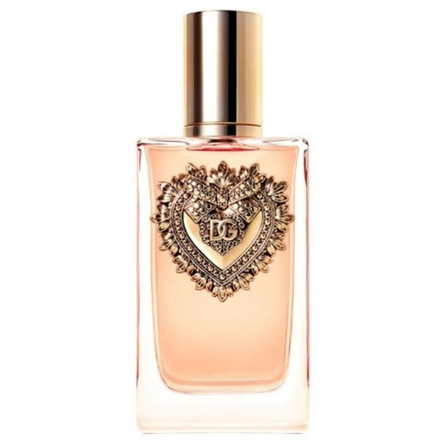
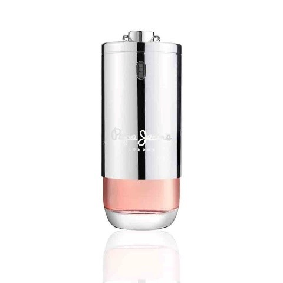
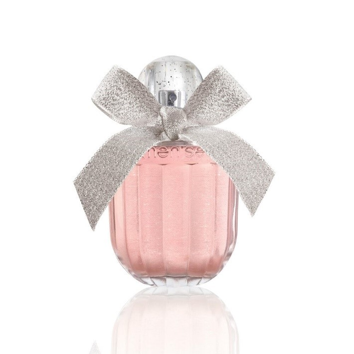
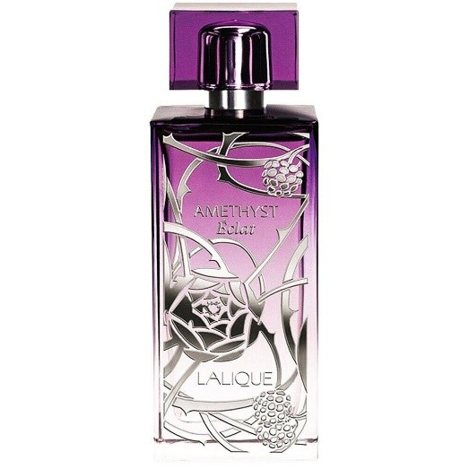
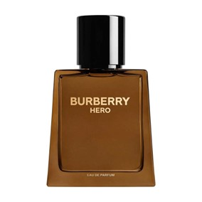

DOLCE&GABBANA: Devotion de Dolce&Gabbana es una fragancia de la familia olfativa Ámbar Vainilla para Mujeres. Esta fragrancia es nueva. Devotion se lanzó en 2023.
PEPE JEANS: Pepe Jeans bright for Her es una fragancia de la familia olfativa Ámbar Vainilla para Mujeres.
WOMEN'SECRET: Rose Seduction pertenece a la familia florales frutal. Con notas de salida de flor de azahar y manzana. Un corazón de jazmín y un fondo de vainilla que le dan ese toque dulce y adictivo. Un aroma muy femenino que sigue la estela de sus predecesores dentro de la misma marca.
LALIQUE: Amethyst Eclat de Lalique es una fragancia de la familia olfativa Floral Frutal para Mujeres.
BURBERRY: Burberry Hero Eau de Parfum combina a la frescura del pino con benjuí e incienso. La fragancia se caracteriza por un cálido trío de aceites de madera de cedro como fondo de una vibrante fusión que evoca un bosque junto al océano. Se presenta en un frasco de color roble intenso con detalles dorados.
